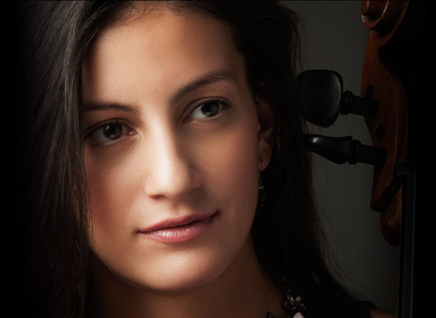

![Nació en 1989. Comenzó sus estudios de cello a la edad de ocho años con el maestro Henrik Zarzicky, quien sería su profesor principal hasta el año 2007 en Bogotá, Colombia. Ana Isabel fue estudiante de pregrado en la Fundación Universitaria Juan N. Corpas y de maestría en la Carnegie Mellon University (Pennsylvania, USA) bajo la guía de Anne Martindale-Williams. Otras influencias significativas en su formación musical han sido los maestros Aldo Mata, Andrés Díaz y Toby Appel. Durante su trayectoria como músico de cámara, se ha presentado en el Festival Cervantino de México, el Teatro Nacional de Costa Rica, el Festival Iberoamericano de Teatro de Bogotá, el Festival de Música Renacentista y Barroca de Chiquitos (Bolivia), el Heinz Hall en Pittsburgh (USA) y el festival de música de cámara Taos School of Music 2010 (New Mexico, USA). Como miembro del Cuarteto Unimusica (2002-2008) y del Cuarteto Starling (2008-2010) fue ganadora del Primer Premio del Concurso Nacional de Música de Cámara de EAFIT, y participó en el Seminario de Música de Cámara de la Universidad de Standford así como en el Festival de Música de Cámara Yehudi Menuhin (California, USA). Ana Isabel fue además miembro de la Canton Symphony Orquesta (USA), de la Orquesta Filarmónica de Minas Gerais (Brasil) y ha tocado como solista con la Orquesta Sinfónica Nacional del Perú y la Orquesta Filarmónica de Bogotá entre otras. En el año 2013, fue seleccionada por concurso para ser miembro de la planta artística de la Orquesta Filarmónica de Bogotá y en enero del presente año, se presentó dentro del marco del VIII Festival Internacional de Música de Cartagena como “Joven Talento”. Actualmente, Ana Isabel actúa como cellista del Cuarteto Santafé y de la Sociedad de Música de Cámara de Bogotá.](images/u813-10.png)